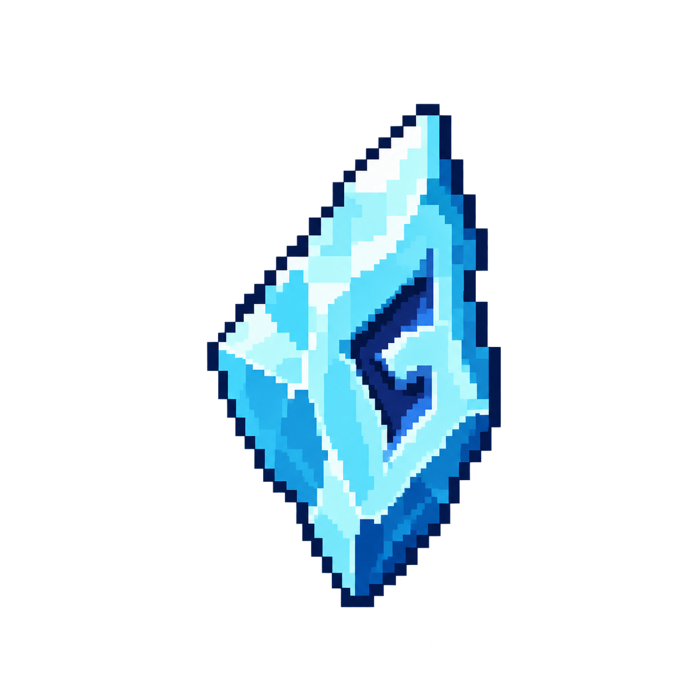

기본 유물 / item-frost
서리 인장
공격에 맞은 일반 적과 정예 적이 잠시 둔화된다. 최대 5회 중첩된다.

| 항목 | 값 |
|---|---|
| 등장 난이도 | 모든 난이도 |
| 무기 제한 | 공용 |
| 최대 보유 중첩 | 5 |
| 영구 해금 | 별도 진행 해금 없음 |
| 내부 ID | frost |
게임 내 설명#
공격에 맞은 일반 적과 정예 적이 잠시 둔화된다. 최대 5회 중첩된다.
실제 동작#
- 직접 무기 적중으로 보스가 아닌 적에게 0.72초 둔화 타이머를 갱신합니다. 일반·원거리·돌진·정예 적의 이동 처리에서 이 타이머를 사용합니다.
- 이동 속도 배율 max(0.42, 0.64-0.055×(중첩-1)). 1~5중첩 배율은 0.64·0.585·0.53·0.475·0.42입니다.
- 원거리 적의 발사 타이머 감소 속도도 둔화 중 ×0.72입니다. 보스는 둔화 대상에서 제외합니다.
- 봉인·쌍둥이·추격자는 둔화 타이머를 받을 수는 있으나 별도 이동 함수가 이를 읽지 않으므로 실제 이동·공격 둔화로 이어지지 않습니다.
중첩·수치 예시#
| 조건 | 결과 |
|---|---|
| 1중첩 | 64% 이동 속도 |
| 2중첩 | 58.5% 이동 속도 |
| 3중첩 | 53% 이동 속도 |
| 4중첩 | 47.5% 이동 속도 |
| 5중첩 | 42% 이동 속도 |
획득과 중첩#
상자 생성 시 난이도·해금·무기 제한과 최대 중첩을 검사합니다. 한 상자에서 같은 유물이 두 번 나오지는 않습니다. 보유 유물 강화 보상에서도 상한에 도달한 유물은 제외합니다.
보상 추첨에서 무기 전용 유물과 새 시너지 후보의 가중치, 공격 유물 보장 규칙을 확인할 수 있습니다.
관련 조합#
이 유물에 연결된 이름 있는 시너지 조합은 등록되어 있지 않습니다. 공통 피해·공격 속도·처치 회복 등의 효과는 각 처리 경로에 따라 다른 유물과 함께 적용됩니다.
함께 읽기
구현 근거
아래 링크는 이 위키를 생성한 게임 소스의 해당 위치를 엽니다.
relics index.html:272makeLoot index.html:508takeLoot index.html:524damageEnemy index.html:923updateEnemies index.html:971